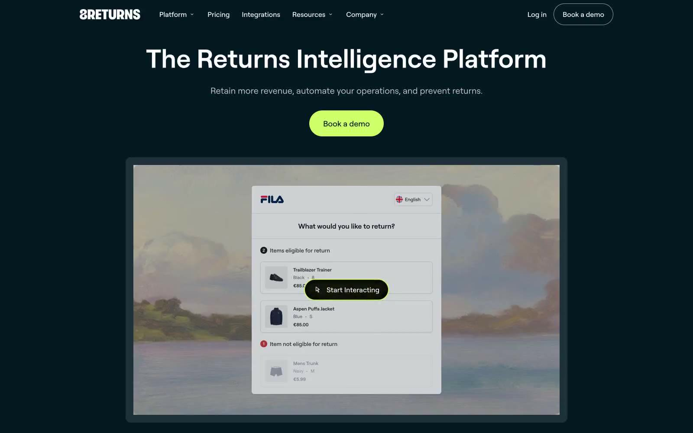

8returns 的 Design.md 主题展示，围绕运营系统、运营监控、数据仪表盘、浅色界面组织页面。
Explore 8returns's light E-commerce design system: Midnight Ink #051923, Lagoon Teal #004853 colors, roobert typography, and DESIGN.md for AI agents.

#051923: #051923#004853: #004853#ffffff: #ffffff#000000: #000000#eef0f2: #eef0f2#1e3039: #1e3039#bfbfbf: #bfbfbf#c8d4e0: #c8d4e0#cfff69: #cfff69#6289ff: #6289ff#525252: #525252#e0e0e0: #e0e0e0display: Interbody: Intermono: ui-monospacehints: Inter,ui-monospace